Je vais donc vous faire suivre le montage d' une de mes créations ( comment j' me la pète !!! ) L' inspiration m' était venue ce coup-ci sur un dessin glané sur le net.
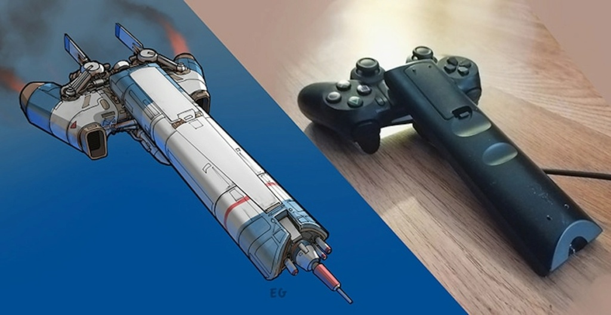
Je cherche donc chez moi et je tombe sur ce que j' ai besoin. Je vide les deux éléments
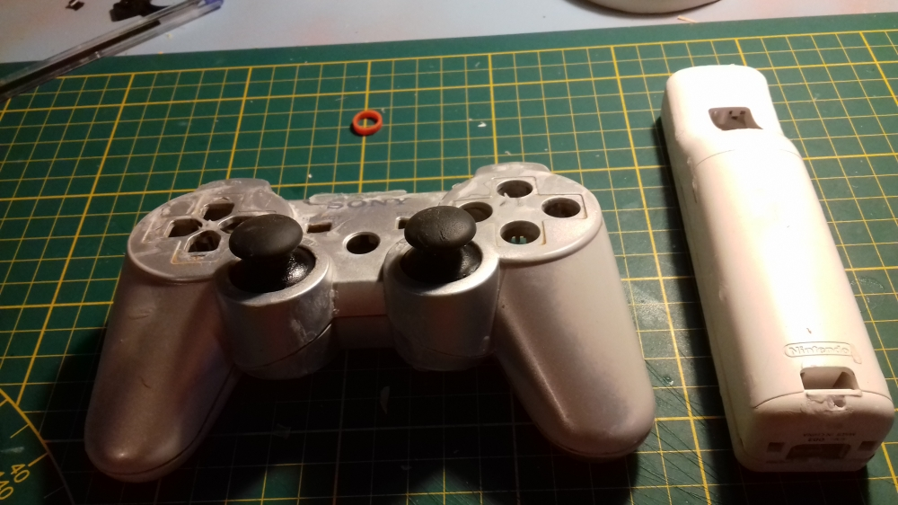
Un coup de dremel pour couper la manette wii. Collage des 2 parties et perçage et ponçage de deux parties de capsule kinder qui feront office de réacteurs.
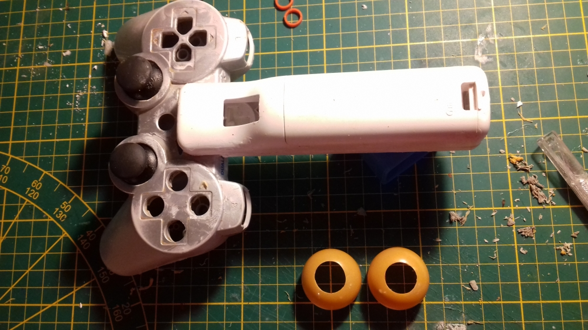
Vu que je ne veux pas copier le dessin d' inspi mais le faire à ma sauce, j' ajoute deux ailerons à l' avant fait en carton mousse et habillés de papier dessin. Et de nouveau j' habille de papier dessin puis mise en place des réacteurs.
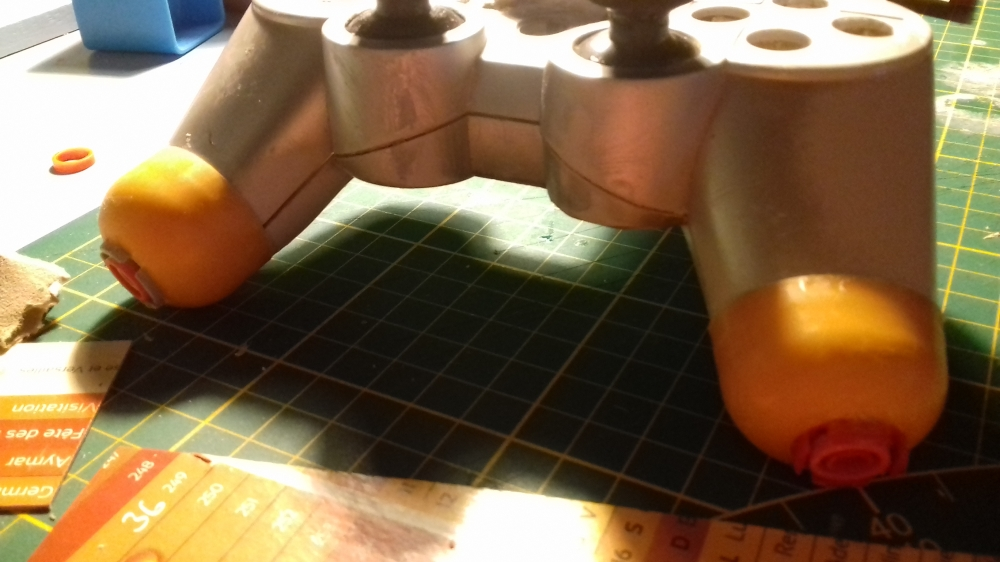
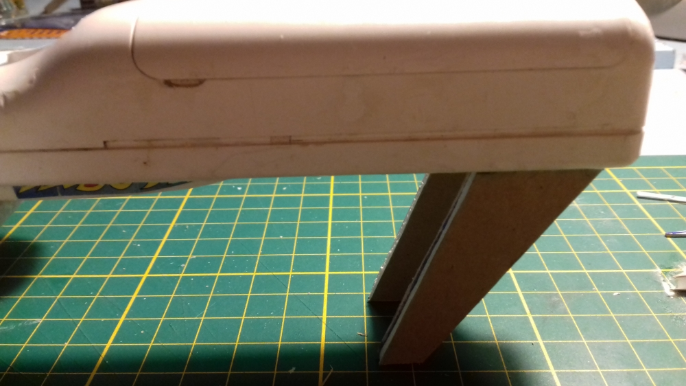
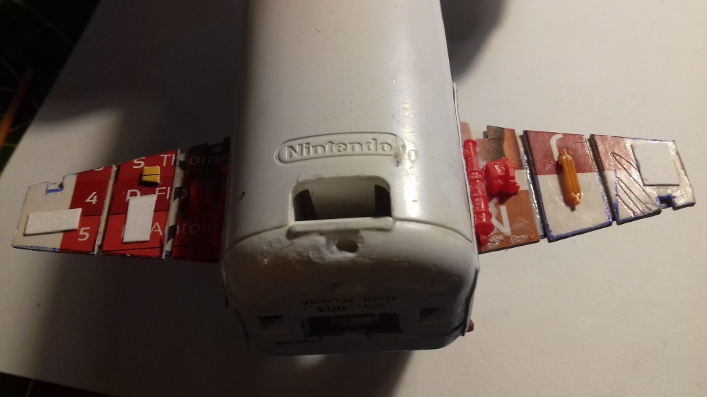
Allez maintenant, mise en place des greebles avec... Ben tout ce que je trouve et qui pourrait aller Désolé pour le côté sombre sur la dernière photo... Donc les ailerons avants faits avec du carton de calendrier ( merci mon assureur !!! Avec ce que j' lui file par an il ne me refourgue que ça... Suspect Mais bon, c' est déjà ça... ) et papier dessin Ailerons arrières. Habillage du fuselage
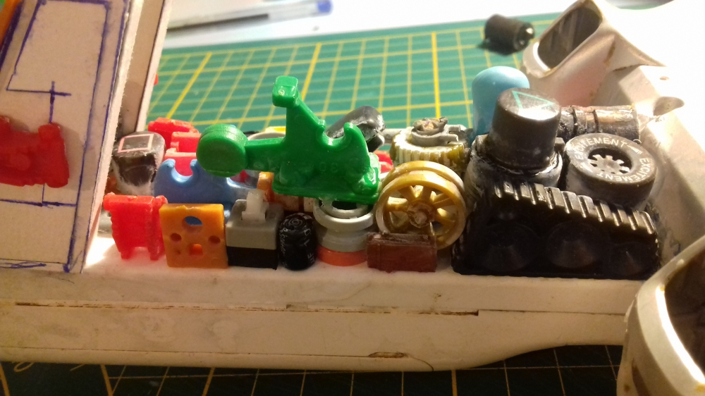
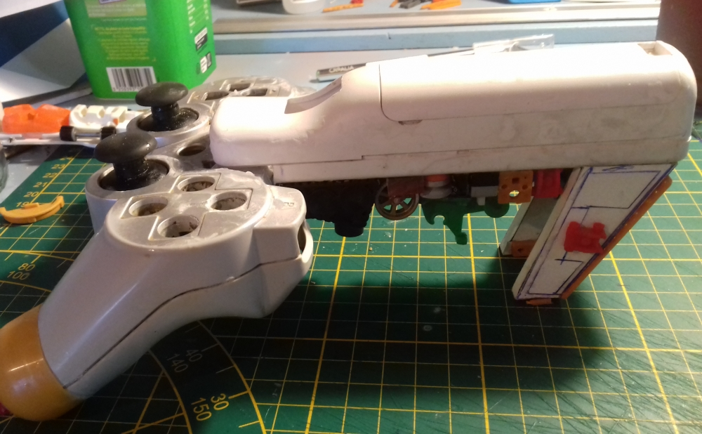
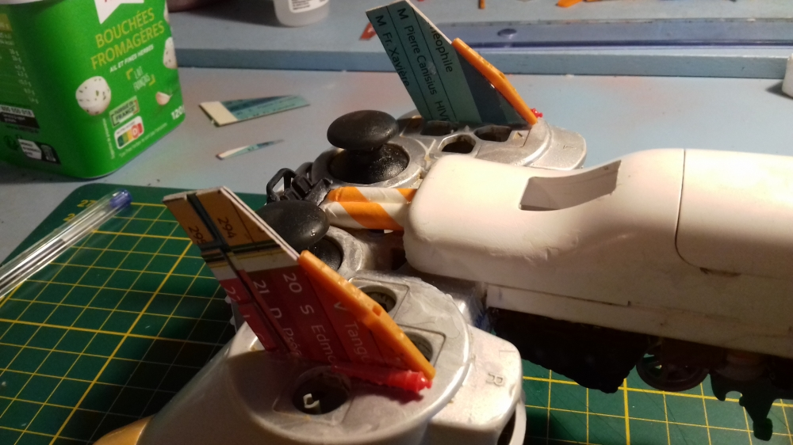
La construction est finie, place à la peinture : L' une des parties d' une création que je préfère, apprêt noir. ça révèle l' ensemble et uniformise le tout
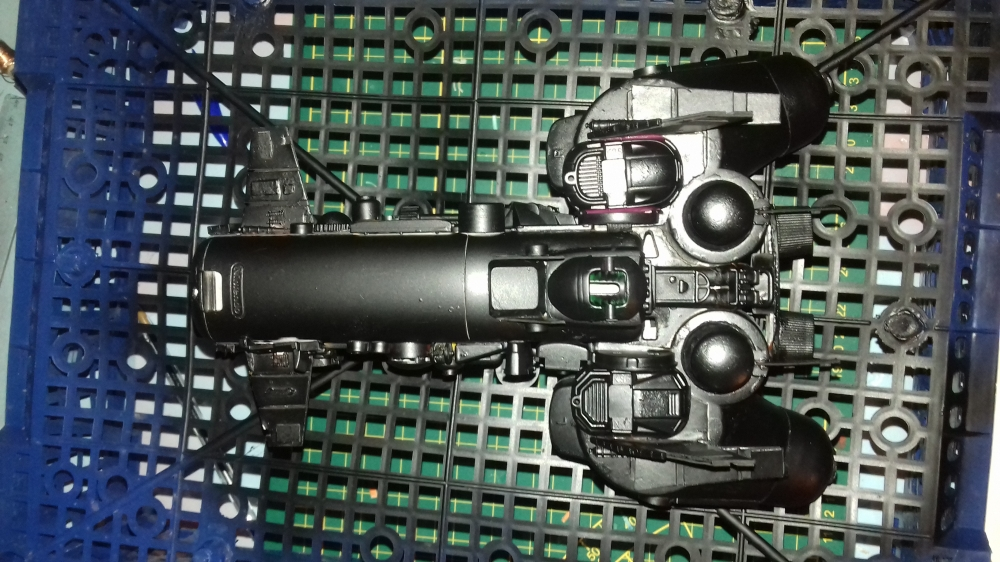
Je passe donc la couleur de base qui est un jaune colza provenant d' un fond d' une vieille bombe, hop... Ça débarrasse et ça le fait !!! ( Z' aime pas gaspiller ) Vernis plus pose de décals
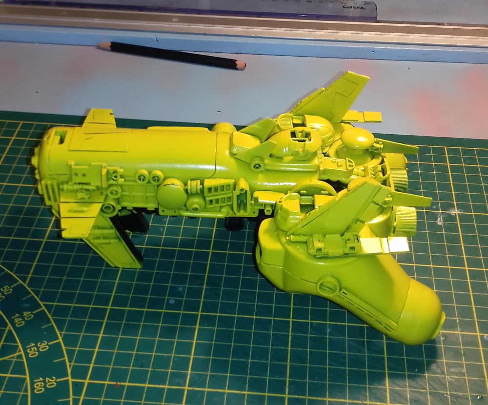
lavis, jus, Filtres, vieillissement et éraflures faites...
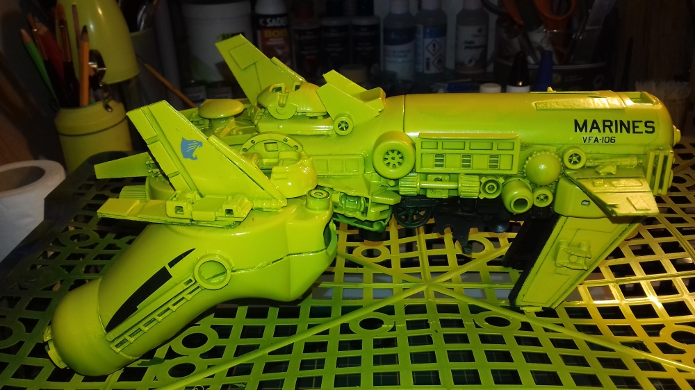
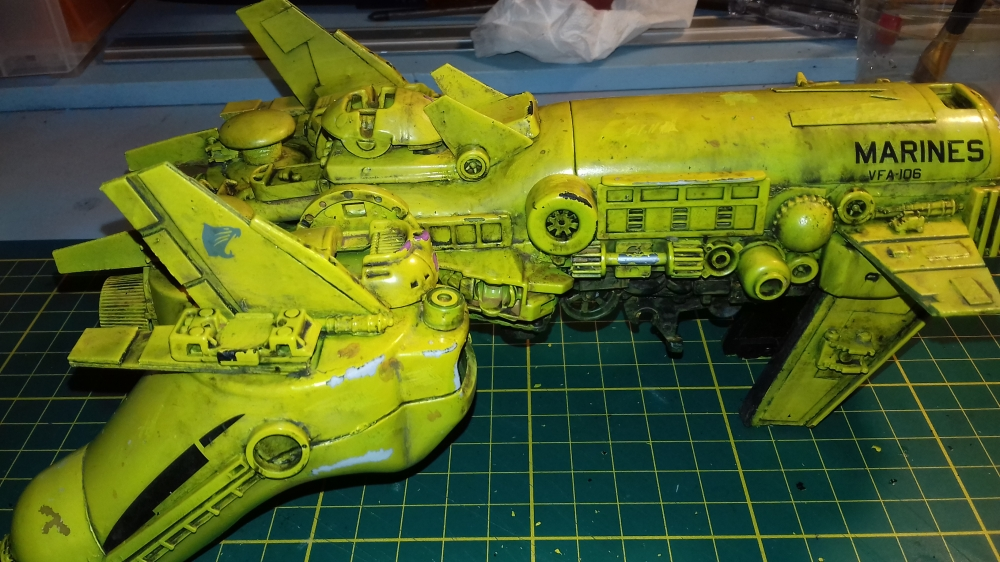
Et pose sur présentoir
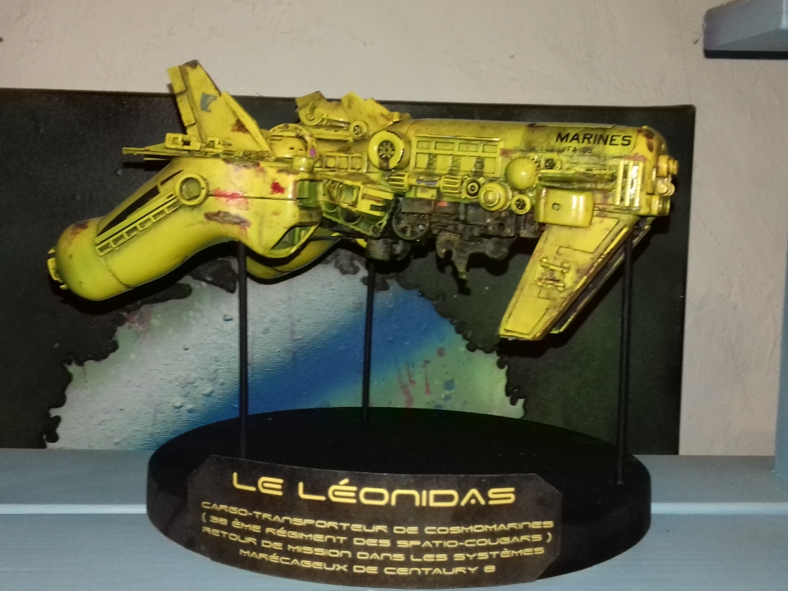
Voilà, l' un de mes premiers projets réalisé en suivant les étapes classique ! trés trés novice dans le traitemement mais j' en garde un souvenir ému et il trône toujours dans ma vitrine !